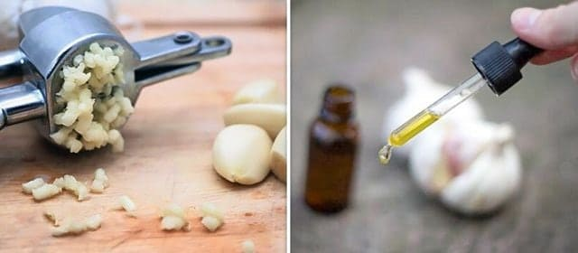
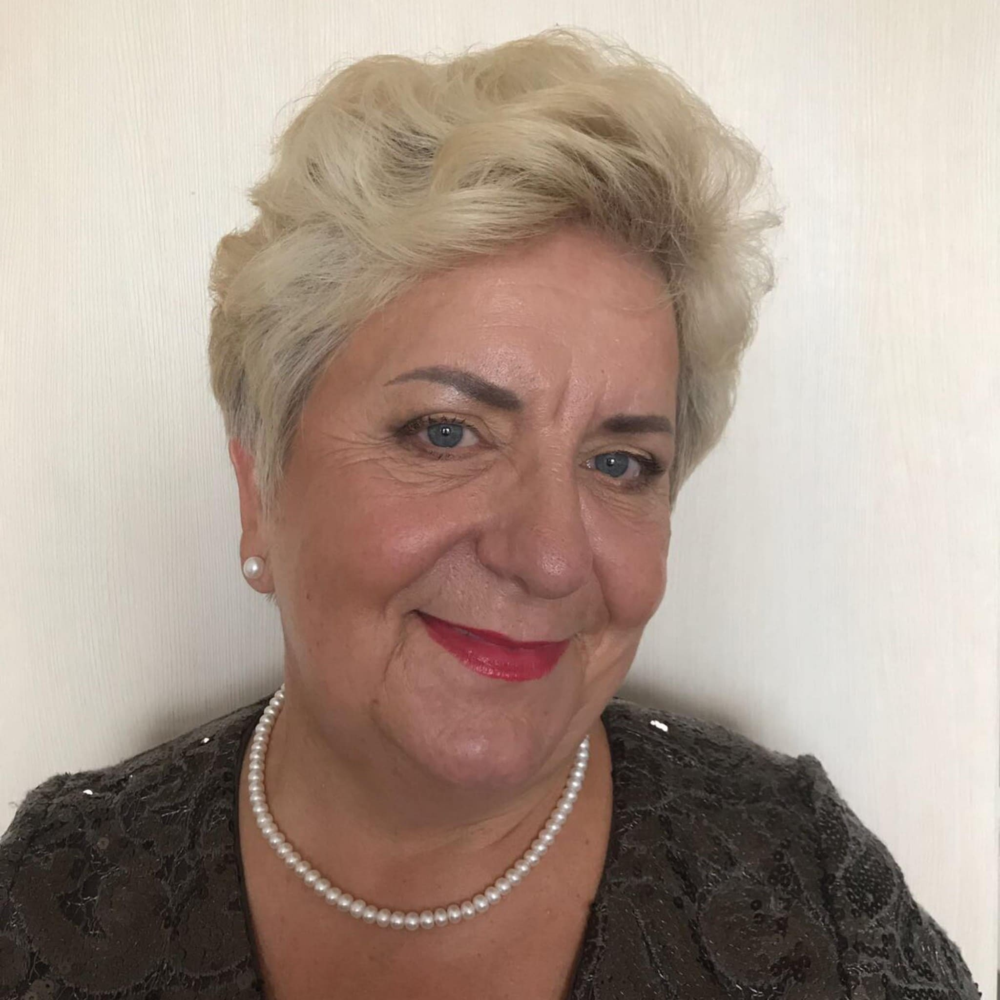

Gli scienziati prevedono che nel ci
saranno più di 200.000 morti per malattie cardiache in Italia. Un italiano su cinque muore dall’infarto.
L'ipertensione, i vasi sanguigni ostruiti e il cuore malato, causano una morte precoce. Come evitarlo e
prolungare la vita di 12-17 anni? Per saperlo – leggi fino alla fine.
Bruno Cappelli
17/9/2022
Tutti sanno che l'ipertensione, l’ictus e l’infarto sono le conseguenze dell
'"inquinamento" dei vasi sanguigni con il colesterolo. I vasi sanguigni sporchi sono la causa di 9
malattie croniche su 10 presumibilmente incurabili. Quindi, cos'è l'ipertensione e come è
pericolosa?
L'ipertensione è una malattia che colpisce un italiano adulto su tre. Allo stesso
tempo, la maggior parte della popolazione non è a conoscenza di questo problema e quindi non ricorre ad
alcuna prevenzione. Tra le persone consapevoli della propria malattia, molte non ricevono cure adeguate:
assumono farmaci in modo irregolare e in dosi troppo basse, o non affrontano l'ipertensione per niente.
Questo atteggiamento nei confronti della propria salute causa numerose complicazioni potenzialmente letali.
Per evitare ciò, devi prima ottenere una risposta alle
seguenti domande:
Cosa dovrebbe sapere una persona ipertesa?
Perché i vasi sanguigni sono responsabili dell'85% della tua salute?
Cos'altro sta avvelenando i vasi sanguigni, tranne il colesterolo?
4 segni evidenti e 7 segni nascosti di vasi sanguigni cattivi.
Come pulire i vasi sanguigni a casa in modo sicuro?
A queste domande ha risposto Piero Anversa, un esperto nel campo
della cardiochirurgia, uno
scienziato di fama mondiale, attuale direttore della Fondazione senza fini di lucro "I vasi sani".
Bruno Cappelli: “Signor Anversa, Lei
dice sempre che i vasi
sanguigni sono responsabili dell'85% della salute del corpo? Perché è così? "
Piero Anversa: “Qual è l'organo più grande del corpo umano?
Pochi lo sanno, ma in realtà l'organo più grande è il nostro sistema circolatorio. I vasi non
sono solo tubi attraverso i quali scorre il sangue. È un singolo organo complesso, il cui problemi portano
immediatamente alla sofferenza.
Quindi cosa succede se non prestare attenzione alla salute vascolare:
Vasi delle gambe malati - vene varicose, gonfiore persistente e pesantezza
continua alle gambe, sensazione di freddo oppure sensazione di bruciore insopportabile ai piedi.
I vasi ostruiti che alimentano il fegato - epatite. Dopo aver mangiato cibi grassi -
eruttazione amara.
Vasi sanguigni nelle articolazioni ,indeboliti e sporchi - cartilagine secca. Le
articolazioni si sfilacciano e fanno male, l'osteocondrosi travolge eccessivamente, compaiono ernie.
I vasi anali si indeboliscono – l’emorroidi vengono ricoperti da protuberanze viola.
Vasi degli occhi deboli – la vista si deteriora, increspature
negli occhi. Si sviluppa la cataratta.
E, naturalmente, la regina delle malattie vascolari, Sua Maestà -
l'ipertensione. L'ipertensione è la madre di ictus e la sorella di infarto.
«Non c'è felicità senza
salute" - e non c'è salute senza vasi sanguigni puliti»
Ad esempio, il sovrappeso è strettamente correlato con i vasi sanguigni. I vasi
sanguigni ostruiti dal colesterolo fano si che gli organi si nutriscono insufficientemente, i vasi sanguigni non
possono fornirli la quantità necessaria di nutrienti. A questo proposito, il cervello invia segnali -
bisogna mangiare. Ma a causa dei vasi sanguigni ostruiti, agli organi manca il cibo . Il cervello comanda di
nuovo - dobbiamo mangiare. Ancora e ancora.
Volete vivere una vita piena? Pulite e ripristinate i vasi sanguigni. I vasi sanguigni puliti
sono la chiave per superare il 90% delle malattie croniche, alcune delle quali sono considerate incurabili.
«Se la sezione trasversale normale del vaso ha lo
spessore di un dito, allora 5 kg di placche di colesterolo la riducono fino a 4 fiammiferi.»
Bruno Cappelli:«Tutti sanno che il colesterolo fa
male. Ostruisce i nostri vasi sanguini, limita il flusso sanguigno e interrompe la circolazione. Ma la colpa
non e' solo del colesterolo?»
Piero Anversa: «Esattamente. Placche di colesterolo, note
anche come “placche aterosclerotiche”», sono responsabili di circa il 60-70% dell'intasamento
vascolare. All'età di 50 anni, nel nostro corpo si accumulano fino a 5 kg di placche di colesterolo. I
depositi di colesterolo limitano il flusso sanguigno nei vasi di 4-5 volte.
Se ha più di 45 anni e non ha mai preso un nutraceutico per purificare i vasi sanguigni,
ti garantisco che hai i problemi con vasi sanguigni. I vasi sanguigni ostruiti da colesterolo, coaguli di sangue
sono dei processi di invecchiamento quasi naturali. Naturalmente, il cibo, le pillole, il fumo e l'alcol
accelerano il processo di intasamento di 5-8 volte. Il minimo stress, il cambiamento del tempo, le tempeste
influiscono sulla tua salute immediatamente. Aumenta la pressione , vertigini, tinnito, la testa inizia a
martellare, dolore alle articolazioni.
Alimenti non consentiti
È nota una relazione diretta tra alcol ed ipertensione;
Cibi affumicati (salmone), cibi sott’olio (funghi, acciughe), cibi sott’aceto e sotto sale (capperi,
alici);
Torte, pasticcini, biscotti farciti, frollini, gelatine, budini, caramelle, merendine, brioche ripiene e
altri tipi di preparazioni dolci, in quanto ricche di grassi e zucchero;
Cibi precotti e fast-food (patatine fritte, crocchette di pollo fritte, etc.)
Fritture, pastella e intingoli;
4 malattie causate dai vasi sanguigni malati:
1. "Ipertensione" Il sintomo principale dell'ipertensione è mal
di testa. Ciò è dovuto al restringimento dei vasi sanguigni nel cervello. Inoltre, i sintomi
frequenti dell'ipertensione sono una sensazione di pesantezza alla testa, palpitazioni e vertigini.
2. "Le vene varicose" Le vene alle gambe gonfie, deformi e
innaturali, pesanti e dolorose. Colesterolo e coaguli di sangue ostruiscono le vene. A poco a poco compaiono
"le stelle" vascolari, che poi si trasformano in una "rete" vascolare.
3. "L’emorroidi" Quando i vasi di drenaggio dell'ano si intasano, le
emorroidi si gonfiano. Se i vasi sanguigni sono ostruiti col tempo si verificano le crepe nell'ano e poi
la rottura.
4. "Osteocondrosi" E’ una mancanza di circolazione sanguigna nella
cartilagine. La cartilagine si indurisce e inizia a consumarsi, senza avere il tempo per riprendersi. Perde
la sua capacità di supporto. I sali non vengono lavati via e iniziano ad accumularsi in modo
incontrollabile formando una crescita di cisti.
7 segnali di pericolo:
1. "Edema" La sera, le gambe si gonfiano, i calzini stringono le
caviglie, lasciando segni. Viso gonfio e borse sotto gli occhi. Il gonfiore indica che suoi organi sono
gonfi.
2. "Tinnito" Da uno squittio appena percettibile ai forti urla che
impediscono di concentrarti. Queste sono le conseguenze dell'aumentata pressione dei vasi cerebrali che
premono sul timpano.
3. "Vertigini" La sensazione di "ubriachezza", acuti e
improvvisi attacchi di vertigini, indicano che l'apparato vascolare sta "sofrendo di fame".
Anche l'udito soffre spesso.
4. "Insonnia" Vi sentite assonnati e letargici ma non riuscite a
dormire? Il motivo è un insufficiente apporto di sangue alla ghiandola pituitaria. Si interrompe la
produzione di melatonina, l'ormone del sonno.
5. "Stanchezza" Non ci sono le forze. Non hai voglia di fare niente.
Vuoi solo sdraiarti. Questa sensazione si verifica quando il tuo corpo entra in modalità di risparmio
d'energetico. I tuoi organi non ricevono abbastanza nutrimento attraverso i vasi sanguigni contaminati e
il tuo corpo cerca di ridurre i livelli di attività per evitare di morire.
6. "Problemi di vista" «Mosche» davanti agli occhi,
oscurità e nebbia negli occhi. Questi sono sintomi di insufficienza vascolare degli occhi.
7. "Dolori articolari" Dolori alle articolazioni a causa del tempo.
Quando ti svegli al mattino, non ti senti allegro e riposato, ma come uno storpio intorpidito e mezzo
paralizzato. Il liquido sinoviale perde le sue proprietà, incolla le articolazioni, come la colla.
Usualmente le persone hanno piu' sintomi contemporaneamente. Allo stesso tempo hanno anche altri sintomi
in diverse combinazioni. Poveretti cercano di combattere ogni malattia separatamente. Pillole per la
pressione, creme per le vene varicose , i medicinali per l'emorroidi, gel per l'osteocondrosi. E,
naturalmente, antidolorifici. Buttano i soldi invano, ma la causa di tutte le malattie sempre uguale - sono i
disturbi circolatori. Bisogna iniziare con una generale pulizia dei vasi sanguigni.
«La maggior parte dei prodotti non aiuta, ma solo
indebolisce e danneggia»
Bruno Cappelli:«Qual è il modo più
efficace per pulire i vasi sanguigni da colesterolo, coaguli e calcificazioni?»
Piero Anversa: «Per la pulizia sicura dei vasi sanguigni,
posso citare solo un prodotto con una reputazione impeccabile - .
Allunga
la vita di 12-17 anni, aggiungendo energia e relax.
- è un prodotto naturale al 100%, che
rafforza
il
sistema cardiovascolare e aiuta a purificare i vasi sanguigni dalle calcificazioni dannose e dalle placche di
colesterolo. Tutto ciò che interferisce con il libero flusso del sangue. L'inquinamento accumulato
negli anni che avvelena la nostra vita, viene sciacquato fuori con
dopo
2
mesi di assunzione regolare.
Scompare il mal di testa e l'acufene (fischi nelle orecchie). Il cervello è,
adeguatamente, alimentato da vasi puliti, funziona alla velocità di un supercomputer. I pensieri sono
chiari e precisi.
La sensazione si intensifica, sentite i suoni piacevoli a cui prima non prestavate
l'attenzione. L'udito migliora, si puo' persino capire una conversazione tranquilla in un'altra
stanza.
Gli aromi acquisiscono dei nuovi colori. La respirazione è libera e uniforme. L'aria
fresca riempie i polmoni, si diffonde attraverso il corpo in onde piacevoli, provocando una sensazione di lieve
euforia.
Il gusto diventa ricco. Il semplice cibo vi da un grande piacere. Mangiate meno, il corpo si
satura più velocemente. Il desiderio costante di dolci e grassi scompare.
Le articolazioni non fanno più male. "Lo scricchiolio” scompare completamente, e al
suo posto ci sono i movimenti fluidi, grazie alla rinnovata idratazione articolare."
Bruno Cappelli:«Impressionante. In effetti,
questa è la prima volta che sento parlare di . Pero, in
generale
ho
sentito parlare di nutraceutici. In Giappone e Israele, hanno ufficialmente approvato i nutraceutici come
rimedi che aiutano con varie malattie.. E in Italia, questi prodotti non sono ancora considerati affidabili.
Perche?»
Piero Anversa: «Lascia che ti racconti una storia
ammonitrice sulla sfiducia. Nel 1928 fu inventato il primo antibiotico - la penicillina. Ha curato facilmente la
dissenteria e il tifo, da cui le persone morirono inevitabilmente.
Tuttavia, la maggior parte delle persone non credeva che potesse aiutare, perché erano
già state scoraggiate 100 volte, cercando di curarsi da queste malattie in passato. Chi è rimasto
deluso 100 volte e non ha avuto paura del 101° tentativo, si è ripreso. E quelli, che si sono arresi,
alzavano le mani, dicendo: «un'altra cura miracolosa che non aiuterà», sono morti, anche se
la loro salvezza era proprio sotto il loro naso.
Come una volta la penicillina sconfiggeva le malattie prevalenti a quel tempo: dissenteria,
tifo e peste polmonare. Cosi, come nel tempo aiuterà ad
eliminare i
sintomi delle malattie vascolari. Sono già stati compiuti i primi passi - Giappone, Canada, Corea, Svizzera
e Israele hanno introdotto una legge sulla pulizia dei vasi sanguigni con nutraceutici, perché sono
naturali e sicuri. In Italia esiste , ma molti hanno paura di tutto
ciò
che è nuovo. Per affrontare l'alta pressione preferiscono usare delle metodiche che erano obsoleti
ancora 20-30 anni fa. Questo è vantaggioso per i farmacisti, perché i prodotti farmaceutici sono molto
costosi. E devi acquistarli sempre.
«I nostri dubbi - sono i nostri traditori , e a
causa loro perdiamo molto di quello, che potremmo ottenere, per paura di provarci».
Bruno Cappelli:«Cosa succede quando inizia il
corso di pulizia con ? Come funziona questo prodotto ?»
Piero Anversa:«Le particelle di sono piene di nutrienti e componenti bioattivi naturali». - una bomba di salute. Fa esplodere le partizioni di colesterolo nei vasi
sanguigni
e consente al sangue di scorrere liberamente. Questo è il motivo per cui
è così efficace - prendete estratti naturali, che funzionano attivamente. La composizione delle
capsule fornisce un immediato assorbimento delle sue particelle dall'organismo. Gli estratti naturali
vengono prontamente assorbiti dalle pareti dell'esofago. Per cui non
provoca bruciore allo stomaco, amarezza in bocca, eruttazione, non irrita l'intestino e protegge lo stomaco.
Anche con un'ulcera, potete liberamente prendere .
- è
un
tesoro
di biocomponenti attivi, che lavorano armoniosamente per la purezza e la forza dei vasi sanguigni»
Come cambierà la vostra condizione
di benessere:
PULISCE I VASI SANGUIGNI
Vitamina C contribuisce alla normalizzazione dei livelli di colesterolo nel sangue. Aumenta
la resistenza del corpo alle infezioni, migliora la forza dei vasi sanguigni, normalizza il metabolismo del
colesterolo, ha un effetto positivo sul sistema endocrino e nervoso. Il corpo umano ha costantemente bisogno di
nuove dosi di questa vitamina. Vitamina C è necessaria per la formazione di collagene, che consente ai vasi
sanguigni di funzionare normalmente e di mantenere la loro forza ed elasticità. Poiché la vitamina C
è una vitamina idrosolubile, non può essere immagazzinata nel corpo. Un'assunzione regolare è
molto importante per il corpo.

Il flusso sanguigno si riprende, le stelle e la rete vascolare scompaiono. Le vene varicose
gradualmente diminuiscono, le emorroidi si seccano.
ARRIVA L'ENERGIA
Entrano in gioco i principi attivi. Intrappolano le particelle di colesterolo ed
attaccandosi ad esse, si trasformano in utili lipoproteine ad alta densità, le quali sono coinvolte nella
scomposizione dei grassi.
con uno sparo uccide due lepri - aiuta a
rimuovere il
colesterolo che inquina i vasi sanguigni e stimola la corretta combustione dei grassi. Grazie a questo senti una
potente ondata di forza, ti viene la voglia di muoverti.
RIDUZIONE DELLA TENSIONE
L'estratto di foglie d'ulivo possiede proprietà antispasmodiche. È come
«la valeriana» per i vasi sanguigni. Aiuta a rilassare e lenire i vasi sanguigni, stretti a causa di
mancanza di flusso sanguigno. La pressione torna alla normalità in modo fluido e sicuro. Scompaiono: il mal
di testa , l'acufene si attenua, i polmoni e i bronchi funzionano facilmente , senza intoppi.
CARICA IL CUORE
Cromo aiuta a ripristinare l'elasticità dei vasi. Consente al sangue di muoversi
più facilmente e quindi di ridurre la pressione. Inizia il processo di autoguarigione del cuore e dei vasi
sanguigni, dal più grande al più piccolo.
L’EFFETTO DELLA FARFALLA
è come il battito delle ali di una
farfalla, che
provoca una reazione a catena eccitante lo spirito di cambiamento. Passo dopo passo lancia una reazione a catena, che purifica il corpo, cominciando dalla
depurazione
dei rifiuti accumulati per decenni nei vasi sanguigni.
FACILE RISVEGLIO
Ti svegli la mattina e ti alzi facilmente dal letto - non devi sforzarti ad alzarti,
trascinando e strofinando le gambe incatenate, scricchiolando con schiena e collo.
FORZA NELLE GAMBE
Quando esci di casa, non devi più preoccuparti dei piedi - camminare non è un
problema. Puoi camminare tutto il giorno , e le tue gambe non si stancano o non si gonfiano.
PACE ASSOLUTA
Sei completamente calmo e rilassato. Niente più dolore costante che divora la tua mente,
impedendoti di concentrarti su altro. Quando nulla ti fa male, cose comuni, i suoni e gli odori traboccono di
impressioni a lungo dimenticate.
CHIAREZZA DELLA MENTE
Anche dopo una dura giornata di lavoro torni a casa con una mente chiara e brillante. Il
cervello funziona come un orologio svizzero, senza sentirsi stanco.
Il SONNO IDEALE
E ora, sdraiato sul letto, ti addormenti velocemente e piacevolmente. Sono finiti i giorni ,
in cui ti agitavi nel letto per metà della notte, girando costantemente il cuscino, e il sonno non veniva
lo stesso. Ora è tutto semplice - decidi tu, quando addormentarti, e il corpo obbedisce ai tuoi comandi.
«È un modo naturale, assolutamente straordinario, un sollievo da
vari malesseri, che migliora la vita quotidiana di una persona. E devi trovare un modo per farlo entrare nella
tua vita.»
Il programma agevolato «Vasi puliti» (attivo dal 2019).
non è più venduto nelle farmacie.
La causa del conflitto è stata l'avidità delle catene farmaceutiche, che hanno chiesto al
produttore di ulteriori euro per ogni prodotto venduto! Pur
sapendo
già dell'alto margine sul prezzo del produttore (il costo di
in
alcune farmacie di Roma ha raggiunto 120 euro), le compagnie farmaceutiche volevano introdurre una tassa
aggiuntiva al produttore.
I rappresentanti delle farmacie si giustificano che tale supplemento consente a loro di sopravvivere.
Perchè un prodotto, che viene acquistato ogni 7-10 anni.
Inoltre, dopo aver pulito i vasi , la persona non ha più bisogno di rimedi che ha costantemente preso
prima! Le persone smettono di abbassare la pressione sanguigna e non acquistano piu gli antidolorifici,
significativamente riducono l'assunzione di prodotti per il diabete. E questo porta le farmacie alle
perdite. Per questo richiede il prezzo più alto.
Di conseguenza, il produttore di ha interrotto i contatti con
tutte
le
farmacie и ed è passato alla distribuzione solo tramite Internet. In primis ,è giusto. Giudicate
voi: non è necessario pagare l'affitto , le farmacie non hanno bisogno di tangenti, per vendere
questo prodotto. Quindi ora è disponibile in offerta
speciale.
La nostra Fondazione indipendente insieme al produttore di
hanno
lanciato
un programma agevolato online.
Chiunque può iscriversi per avere
a condizioni
previlegiate, l'offerta è valida fino al incluso, o alla fine della scorta presso il magazzino regionale di . E
tutto questo nonostante la mancanza di pubblicità su radio o televisione. Le persone condividono
informazione, consigliano a familiari e amici.
Termini di utilizzo di .
Solo per uso personale.
Lasciare richiesta tramite il modulo sul nostro sito ufficiale.
Tutto ciò è stato fatto per combattere le speculazioni su questo prodotto
dove gli intermediari cercavano di acquistare in grandi
quantità e
rivenderlo con il proprio margine.
Iscriversi tramite il modulo ufficiale del nostro programma. Il modulo di domanda
ufficiale è una garanzia di qualità e protezione dagli speculatori.
A partire dal nel
progetto hanno partecipato:
24569
RECENZIONI E DOMANDE:
Elisabetta Vecchio
Ho fatto l'ordine di questo prodotto il mese scorso. A volte, la pressione
era piuttosto alta e la frequenza cardiaca irregolare. Sto prendendo questo prodotto già da 3-4
settimane, la pressione è tornata alla normalità. Adesso mi sento molto meglio. Grazie mille!
Gerardina Bonelli
Ho ricevuto . Tutto era come detto
prima:
pressione, mal di testa quasi ogni sera, anche gli antidolorifici non hanno aiutato. Solo più tardi
ho scoperto che la testa faceva male per la pressione. Pero' non è questo che voglio dire. Un
amico mi ha consigliato , sono riuscita ad ordinarlo tramite
l'offerta del vostro programma preferenziale, sono rimasta molto soddisfatta. Dopo 2 mesi sono
diventata un'altra persona. La testa non mi dà più fastidio, le vene varicose sono scomparse
e LA COSA PIU IMORTANTE - HO PERSO 14KG! Da 92 kg a 78 kg! Ecco cosa vuol dire la circolazione sana!
Consiglio anche a scopo preventivo delle altre malattie!
Violetta Volpe
Buongiorno Elisabetta, ha per caso parenti o amici nella regione in cui va
questo programma ? Potrebbe chiederli di effettuare un ordine per me ? A meno che, non decidino di tenerlo
per sé :)), secondo le condizioni del programma, è possibile ordinare un solo ciclo a persona.
Evaristo Longo
Ho acquistato un ciclo di 3 mesi a 300 euro. L'anno scorso, quando
era nelle farmacie. E vi dico, che non me ne pento!! Anche
se si
è
rivelato molto costoso, ho già risparmiato quasi la stessa somma su altri farmaci solo
nell'ultimo anno. E la vita è diventata molto più facile, questo non può essere
paragonato al denaro! A 51 anni, mi sentivo come un nonno debole). Ho cercato di non allontanarmi troppo
dal tonometro e dalle pillole per la pressione, non ho nemmeno sognato di raggiungere l'età della
pensione (a 67 anni), la testa mi faceva sempre male, pensavo addirittura di farla finita prima possibile
... Ma dopo 2 mesi ho dimenticato della pressione, mi sento una PERSONA GIOVANE (se capite cosa intendo)!
Quindi, anche se non esiste un programma con gli sconti nella vostra regione, ordinate senza promozione, a
qualsiasi prezzo - non ve ne’ pentirete !
Eva Esposito
- E' IL MIGLIOR PRODOTTO!
Prima ho
usato
altri rimedi, pillole di farmacia. So che sono le misure obsolete. Pero' non mi piace andare dai
dottori e non mi dava fastidio piu di tanto. Ogni tanto li prendevo quando mi si alzava la pressione. Ma
improvvisamente hanno smesso di aiutarmi. Poi sono andata dal dottore e lui mi ha detto di provare il
nuovo prodotto (il giovane medico probabilmente ancora
credeva che
i
farmaci dovessero essere d'aiuto alle persone, e non per fregare i soldi!). mi ha aiutato dalla prima dose - la pressione è scesa subito,
in
più
ho iniziato a fare il ciclo completo. Dopo 3 settimane ho dimenticato che cos'è
l'ipertensione. Le vene varicose mi sono scomparse, mi davano fastidio per 10 anni! Avevo anche un
problema femminile, e non n'è rimasta traccia. Mi sento benissimo ! Come una ragazza giovane !
Niccoletta Dicarlo
Grazie! Sono riuscita ad ordinare una confezione. Presto la proverò.
Gioacchino Papi
C'e anche a Bologna, sa qualcuno ?
Casimiro Agostini Editor
Sì. Questo programma è disponibile per tutti i residenti in Italia.
Marcella Perri
Le dita di mia madre hanno iniziato a perdere sensibilità, il mio amico è
uno specialista in cardiologia l'ha immediatamente diagnosticato - i vasi erano ostruiti, il sangue
non scorreva bene agli
arti. Ha prescritto «le statine», ma ho letto che possono causare il cancro intestinale , e ho
deciso di non rischiare. L'ho portata da un altro specialista, e lui mi ha consigliato di fare un
ciclo di . ... All'epoca mi è costato circa 280
euro. Ma
ve lo
dico subito, ne è valsa la pena! Nella seconda settimana, le sue dita si sono ripresi quasi
complettamente. Dopo 1,5 mesi il torpore è completamente scomparso, la pressione è tornata alla
normalità, passata la dispnea.. La mamma ha iniziato a recuperare molta energia, è migliorata la
memoria, e le articolazioni smisero di far male anche in caso di maltempo. Non mi pento dei soldi spesi!
La salute dei genitori vale più dei soldi !
Rita Costa
La ringrazio per i suoi commenti! Ora non devo andare da specialisti. Di
solito i medici mi prescrivevano solo i fondi costosi, perché li pagano le compagnie farmaceutiche.
Le mie mani, per circa un anno, si intorpidivano ogni mattina. Grazie ai suoi feedback, proverò
. Anche se l'intorpidimento non passera', non fa mai
male
tenere
puliti i vasi sanguigni! Grazie !!
Elisa Mura
Grazie per questo articolo!! L'ho letto in tempo. Recentemente il mio
colesterolo è aumentato e il mio specialista in cardiologia mi ha prescritto una terapia con statine.
Ma ora preferisco
provare , la composizione naturale mi da piu fiducia.
Giulia Giovannini
Ho sentito parlare di questo metodo ma non l'ho ancora provato. Penso che
sia l'ora di provarlo :-)
Agnese Volpi
Ho preso decisione di provarlo e ancora non me ne pento. Se qualcuno dovesse
avere problemi con i vasi sanguigni, ve lo consiglio. Non ci sono stati effetti collaterali, sono rimasta
soddisfatta dai risultati.

Vittoria Dilorenzo
Ho il colesterolo molto alto, il dottore mi ha prescritto le statine. Per una
settimana non ho potuto nemmeno bere, si sono gonfiati tutti i linfonodi, soprattutto il collo, non
riuscivo a muovere la testa. Inoltre mi si è peggiorata la vista. Letteralmente 4 giorni dopo averle
assunte mi si è formata una «nebbia» davanti agli occhi. Un esperto di cardiologia che
conosco mi ha detto che era un effetto collaterale delle statine. Mi ha sostituito il mio rimedio -
Rosuvastatina, però
avevo già paura, e non ho più preso niente. Ora sto pensando di provare , gli ingredienti naturali non dovrebbero avere effetti collaterali?
Ho
ancora
tempo ??
Lino Chiesa
è il prodotto numero uno per
abbassare
il colesterolo ! Non ci sono stati effetti collaterali dopo. Forse qualcuno è allergico ad alcuni
ingredienti… ma questo è raro.
Andrea Barone
La migliore medicina per il colesterolo - è LA DIETA !!!
Margherita Raimondi
La dieta aiuterà a prevenire la formazione di nuovi depositi di
colesterolo, ma non cambierà la situazione con quelli vecchi. Credetemi ho vissuto questa storia con
le diete più di una volta.
Ortensia Tedesco
Il colesterolo era di 6,8 , che per me è troppo. Vertigini in
continuazione, picchi di pressione e mi sentivo sempre male. E dopo 2 mesi il risultato era di 3,4. Non
riesco a calmarmi dalla gioia! Ora non c'è bisogno di andare a fare gli esami. Ho visto la
differenza, cosa vuol dire il sangue senza i "grassi", quando la testa ha cominciato a lavorare
chiaramente)) Le persone che mi conoscono, dicono che non mi riconoscono più! Dicono che sono
diventata più carina!
Agnese Borghi
Grazie per l’informazione! Lo vorrei provare, la pressione non mi da pace.
Silvana Giusti
Confermo tutto detto prima, e’
meraviglioso, uno dei
prodotti più economici ed efficaci!